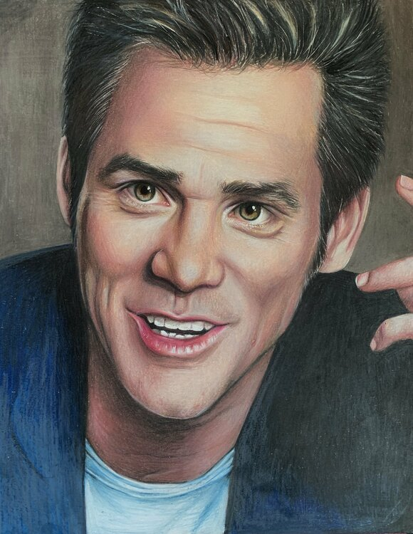

JİM CARREY
Sinema Oyuncusu\Komedyen
17 Ocak 1962 yılında Kanada’nın ikinci en büyük kenti olan Ontario şehrinde dünyaya geldi. Gerçek adı, James Eugene Redmond Carrey’dir. Altın Küre sahibi ünlü sinema oyuncusu ve komedyendir. 1970 yılında televizyonda küçük dizilerde roller
almaya başladı. Bu ufak adımlar sayesinde ilk çıkışını 1993 yılında “In Living Color” isimli televizyon showunda yer alarak yaptı. Doğaçlama yeteneği ve mimiklerindeki yeteneğin fark edilmesi uzuns ürmedi. 1994 yılında “Ace Ventura” Pet
Detective (Budala Dedektif) adlı filmi ile sinema dünyasına geçiş yaptı. Bu film ile kısa sürede çok büyük başarı elde etti.
Film tekliflerinin ardı arkası kesilmedi. Yine aynı yılda imza attığı The Mask (Maske) ve Salak ile Avanak filmi ile asıl çıkışını gerçekleştirdi. Maske büyük bir gişe başarısı elde etti.